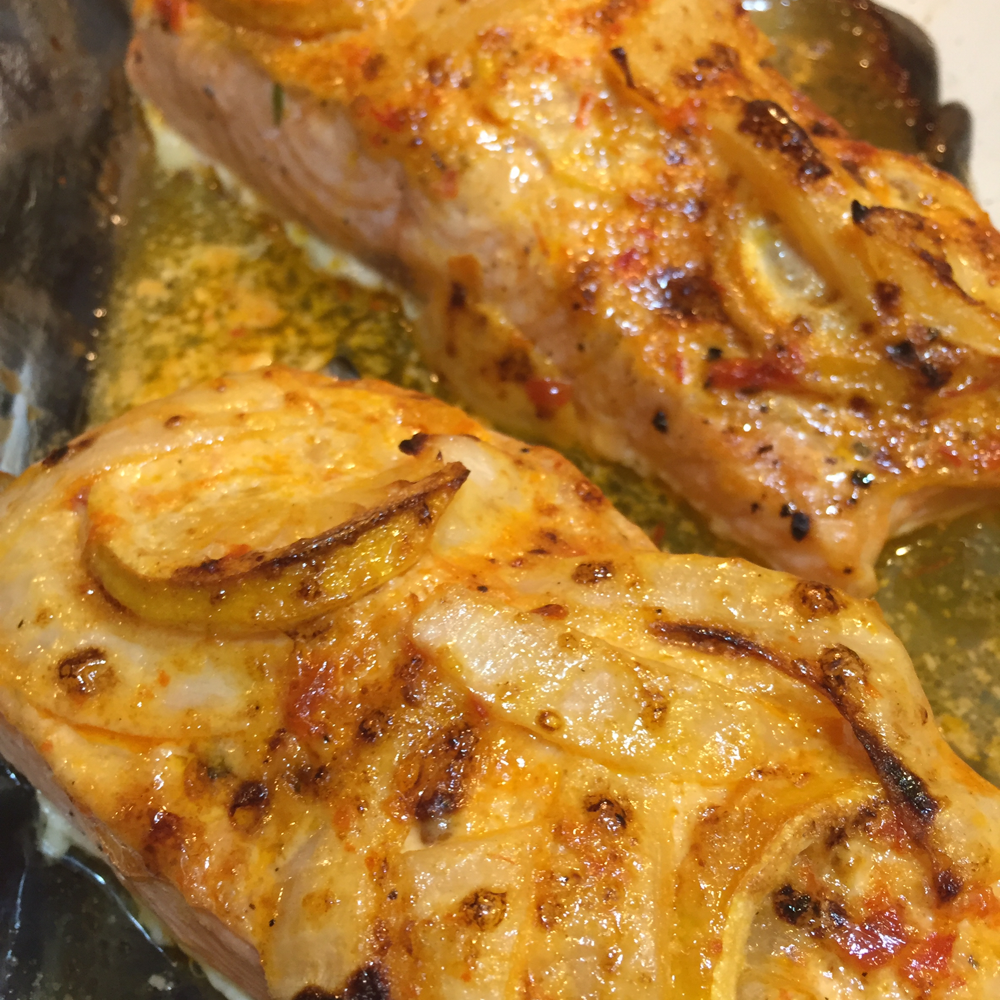

Salmon with Harissa

Description
Fiery harissa and smoky paprika in a mayo base stand up to the distinctive flavor of mighty wild salmon.
Ingredients:
- 1 teaspoon vegetable oil
- 1 pound wild salmon fillet
- salt and pepper to taste
- 4 thin slices lemon
- 2 thin slices sweet onion, separated into rings
- ⅓ cup mayonnaise
Steps:
- Preheat oven to 425 degrees F (220 degrees C). Coat the inside of a 9x12-inch baking dish with vegetable
oil.
- Sprinkle the salmon with salt and pepper, and place into the baking dish. Arrange the lemon slices and onion
rings on the salmon. In a bowl, mix together the mayonnaise, lemon juice, harissa, and smoked paprika until
the mixture is smooth and well combined. Spread the mayonnaise mixture over the fish, lemon, and onion
slices, getting the sauce onto the fish. Pour the orange juice and wine around the salmon.
- Bake in the preheated oven until the fish is hot and has begun to turn opaque, 10 to 12 minutes. Remove the
baking dish from the oven, set a broiler rack to about 5 inches from the broiler, and turn the broiler on.
Broil the fish until nicely browned, about 3 minutes.